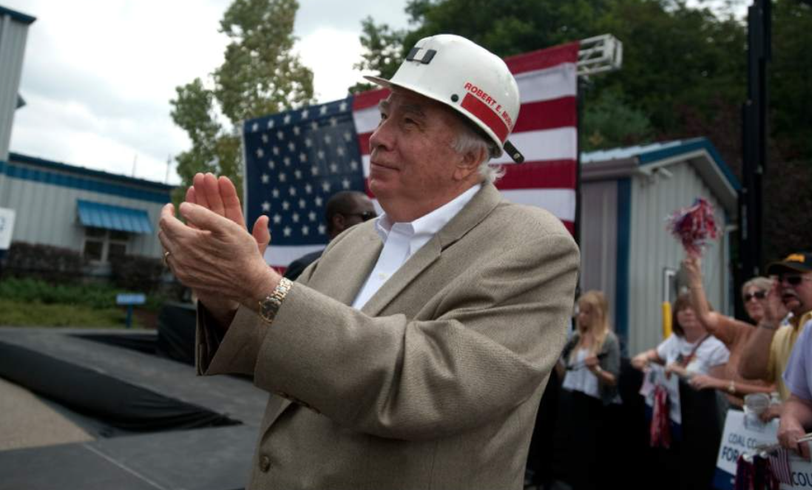
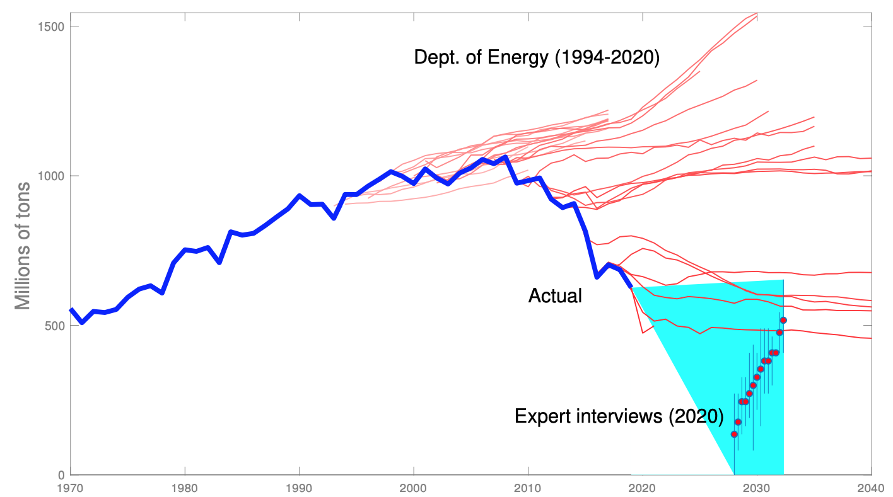
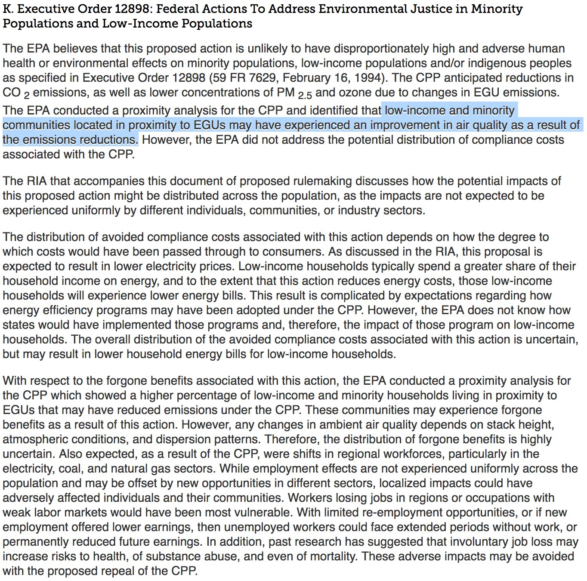
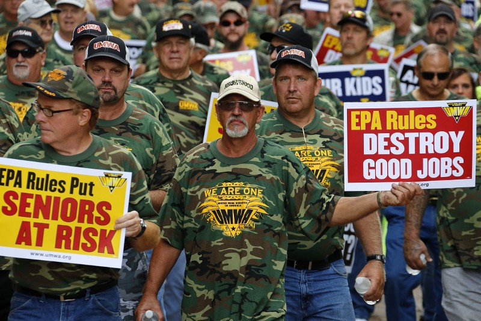

To applaud
- interdisciplinary
- in-depth focus on a policy domain
- impressive elite interviews (make more of these!)
- highlights interest groups

Interesting findings
As coal got expensive, lobbyists switched their messaging from “coal is cheap” to “coal is reliable and secure.”
“affordability was highlighted by interviewees as the most important objective that shapes energy policies.” But “reliability and security…are a dominant focus in politics.”
Thus, the coal industry succeeded in influencing national political rhetoric but failed to translate political support into policies needed to maintain profits.
A new puzzle!
???
I will say what I took to be the main argument, and you can tell me if that was your intent.
The argument, part 1
Q1a. Why has the coal industry persisted?
A: It blocks regulation (extending its profitable horizon)
Q1b. Why has it declined?
A: It is less and less profitable
"The decline of coal in the United States is mainly driven by
- inexpensive alternative energy sources and
- a regulatory system that prioritizes minimizing electricity cost."
The argument, part 2
Q2. Why is coal so prominent in (national) political debates?
**Compared to what?*
A: The industry faces existential threats, so it funds PR campaigns and bribes politicians
A: Desperate coal-dependent communities invite national electoral appeals, even though they know coal is over
–
(symbolic appeals, not deciding votes, right?)
Methods
20 elite interviews
But also a good deal of secondary-source review
Could more systematically exploit and cite both.
Where do they disagree, and why?
What evidence yields Table 1?
Be clear about your argument vs. your subjects’ rhetoric:
“Changes in these competing technologies are more important than policies and the efforts of interest groups.” (p. 2)
“unfair wholesale market design in favor of natural gas” (p. 9)
“coal interest groups across the country were mobilized to prevent further state legislation; thus, all mandated RPS were written into law before 2008. Since then, utilities and the coal mining industry have successfully blocked RPS” (p. 11)
–
“The abolishment of the Clean Power Plan has no tangible effect on the trajectory of future US carbon emissions” (p. 10)
- !?!? Then why such a big fight?
What assumptions about technology and the political allocation of resources, regulation, property rights, etc. go into EIA and DOE forecasts?
How do experts’ assumptions differ?

International Political Economy of Trade
How would a political scientist explain shifts in exports?
Comparative Political Economy
What assumptions about domestic political economies of importers yield these forecasts?
Do US coal companies have the power to affect the volume or source of imports?
Are they shaping energy/climate policy in potential importing countries?
#Goals
Did interviewees emphasize different “objectives of energy policy”? Was there a consensus on their place in the 2x2 (policy vs. rhetoric X local vs. federal)?
- affordability
- reliability & security
- cleanness
–
- equity? (super interesting if elites didn’t mention policy debates over “fair” prices, “fair” profits, “fair” access, or environmental justice)
–

Contextual factors
1. Inexpensive, cleaner, technological advanced alternatives
why are alternatives inexpensive?
does “cleaner” matter to this story?
“technologically advanced”–is this why they are cheaper?
2. Polarized political environment?
“In political systems where organized labor was allied with the largest left-wing party and emissions-intensive businesses were allied with the largest right-wing party, a ‘double representation’ of emissions-intensive economic interests resulted. In these cases, parties on both sides of the ideological spectrum had factions representing the interests of carbon-intensive constituencies” (Mildenberger 2020)

2. Polarized political environment?
Some “environmental” issues are polarized, and some are not - coal is moderately polarized - conservation ag subsidies are not at all - “climate” is polarized (even though coal and agriculture can both be framed as climate policy)
???
These are all related but have been parsed differently into coalitions.
3. Organized interest groups
“[The United States’] institutional terrain advantages political actors with the capacity to work across multiple venues, over extended periods, and in a political environment where coordinated government action is difficult, and strategies of evasion and exit from regulatory constraints are often successful. These capacities are characteristic of organized groups, not individual voters.”- Hacker, Hertel-Fernandez, Pierson, and Thelen (Forthcoming)
3. Organized interest groups
“Minimizing the electricity rate for local consumers is the most important regulatory objective for the PUCs.” Do PUCs have goals, or are they venues of political conflict?
“Conflict rages in legislatures and public utility commissions…Just because a coal plant is uneconomic does not mean it will close; if utilities have debt and equity in that plant, they will work hard to keep it open.”
“Private electric utilities have long held a privileged position in energy policy, controlling state regulate bodies for most of the twentieth century” (Stokes 2020)
–
Come to CPC on October 15th!
???
Bring Stokes’ insights into the PUC section, since this is what she is writing about.
“Electricity market deregulation has also contributed to this objective.”
“heavily regulated” compared to what? “deregulated” natural monopolies => “lower prices and improve services.” Deregulation just shifted power from PUCs to RSOs and FERC (and somewhat to companies to charge higher rates)
4. Electoral college system
[not yet discussed]
–
I’m not sure this belongs.
5. Lack of government supports for job creation in coal communities
[not yet discussed]
–
Compared to other communities?
So, why did coal die?
Changing technology? i.e., the labor required per KWH?
–
Changing politics of capital costs?
- forced transfers of property (mineral rights, easements for pipelines)?
- extraction or transportation on public lands?
- public financing or infrastructure?
Changing politics of market structure?
- trade rules?
- market entrance regulations? (e.g., grid access)
- price regulations or guarantees?
Political economy:
Electricity markets are policy tools used to distribute resources, created and contested through politics.
–
So are land use and bankruptcy laws
“the federal Surface Mining Control and Reclamation Act was structured initially and then became amplified through policy feedback processes, to support coal production over other values” (Bozzi 2013)
- What fights between what groups constrained by what institutions kept us burning coal for so long? Why are KWH from coal so cheap and profitable when the costs for so many are so high?
- What fights between what groups constrained by what institutions made us stop burning coal? Why, despite the industry’s incumbency advantage and double representation, is coal no longer profitable?
Smaller issues:
- missing citations for facts throughout
- organizationally, the sections are fairly disconnected
- page 3, “From 2016 to 2019, the annual retired capacity has nearly tripled” does not appear to be true in Figure 3, where the net change was greatest in 2016
- the old DOE predictions could vary in color or shade to indicate when they were made
- fairly uncritical about the assumptions in the EIA and other estimates
- Not clear why table one is formatted the way it is. Are the actors aligned with the objectives? If so, maybe split out the contextual factors.
- “The US government has been devoted to lower energy prices and has branded cheap energy as one of the competitive advantages for business” – statements like this need citations
- “Under the price pressure from either regulators or market competition, utilities, which consume more than 90% of US coal, would always choose to build the most inexpensive power plants in order to minimize the electricity bill for customers”–really? That is not how companies typically work, especially natural monopolies.
- Clarify types of impacts. “environmental or climate impact” is not clear.
- I don’t know what you mean “energy policies have become regulatory, and thus the prominence of partisanship on the issue increased over time.”
- Statements like “In the past 13 elections cycles, the coal mining industry has been the biggest source of campaign dollars within the mining industry, with 88% of those going to Republican candidates” need citations
- BOX 1. The coal industry did participate in the rule-making process. It helped fund protests and lobbied, in part, to set up litigation because they knew they would sue for whatever they did not get through lobbying.
- “politicization of coal, on the other hand, is shaped by a group of industrial, social and political actors with different objectives” Different objectives than whom?
- I’m not sure what role CSS plays in your story
- I would read Stokes (2020) much more carefully. There is a lot in there for this chapter, and it is worth citing her work correctly.
- Oreskes and Conway’s Merchants of Doubt (2010) may also be worth citing in the climate policy section.